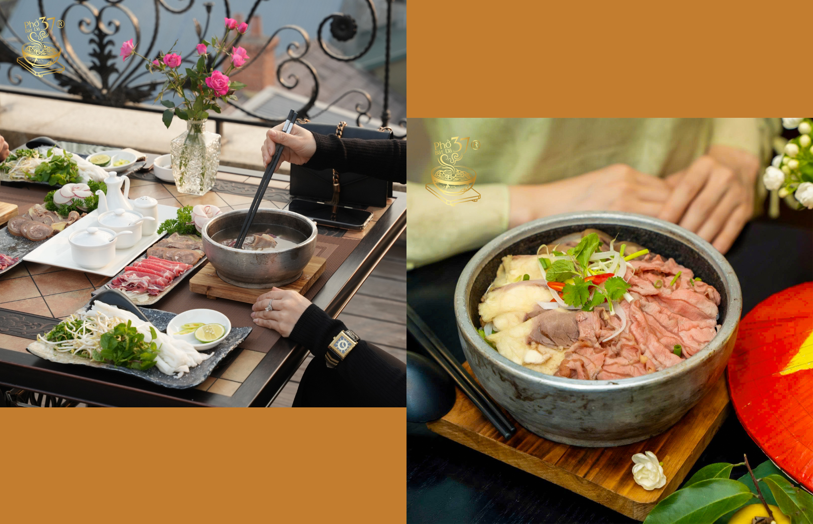
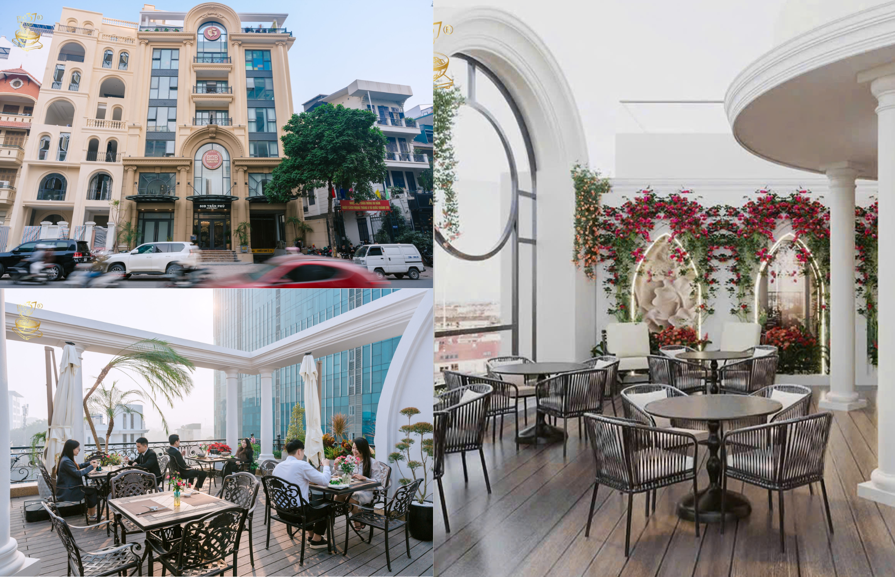

Phở được coi là món ăn truyền thống đặc sắc của nền văn hóa ẩm thực Việt Nam và đặc biệt là người dân Hà Nội, thu hút lượng lớn khách du lịch đến thưởng thức và đánh giá cao. Một trong những địa nổi tiếng với sự đa dạng nhưng vẫn giữ được hương vị riêng biệt của Phở là Phở Đá 37 nằm ngay bên trong nhà hàng 80B Trần Phú.
Hương vị phở truyền thốn hoà mình trong phong cách hiện đại của nhà hàng. Thịt trong phở Bát Đá 37 đặc biệt tuyển chọn từ nạm bò hoặc gầu bò tươi ngon, thái miếng vừa đủ đem lại cảm giác mềm mộng nước, không dai tạo cho nước dùng vị ngọt tự nhiên. Bánh phở trắng trong, mềm dẻo được cho vào để tăng thêm sự cân bằng cho món ăn nước dùng nhanh chóng ngấm vào từng sợi phở tạo nên hương vị hoà hợp. Mức giá dao động từ 85.000 VNĐ đến 950.000 VNĐ mỗi suất, giá cả phù hợp với không gian quán.Giá sẽ tăng hoặc giảm còn phụ thuộc vào từng loại thịt mà người dùng chọn trải nghiệm.

Không gian: nằm trong khuôn viên khu biệt thự sang trọng, mang lại cảm giác sang trọng, ấm cúng, phù hợp để đi cùng bạn bè, người thân hoặc đối tác.

Phục vụ rất thân thiệt và sẵn sàng giúp đỡ khách hàng với thái độ vui vẻ nhưng nhìn chung giá vẫn khá cao so đối với nhiều người Nếu bạn muốn thưởng cho chính mình một món ăn có thể làm ấm bụng giữa khí trời Hà Nội vào sáng sớm hoặc đến khi tối muộn bạn vẫn có thể đến để thử hãy liên hệ ngay đến số hotline hoặc đến trực tiếp trải nghiệm nhé.Hy vọng bạn sẽ thích!
Thời gian mở cửa: 06:00 – 22:00
Hotline: 0888 22 9866
Địa chỉ: 80B Trần Phú, P. Ba Đình, Hà Nội
Về đầu trang{kind=link}
{kind=link}